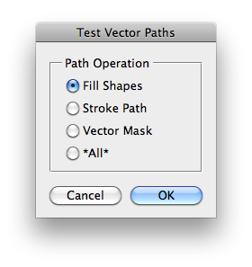

This script is part of the set of Test Scripts coming with the JSON Action Manager scripting library.
It shows how to set vector paths, either built from series of control points or defined by custom shapes, then stroke or fill them, or use them as vector mask:
